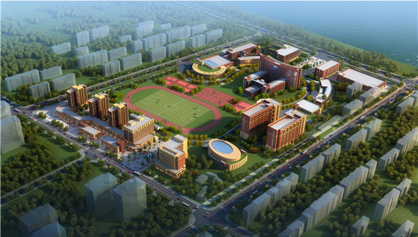
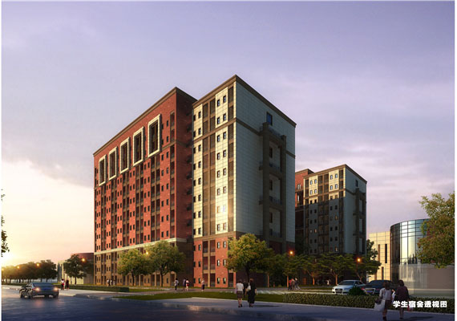
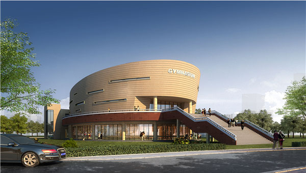
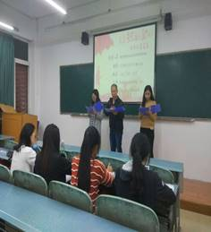
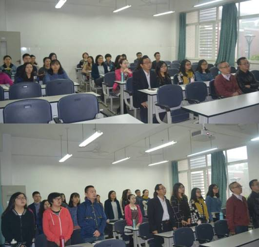
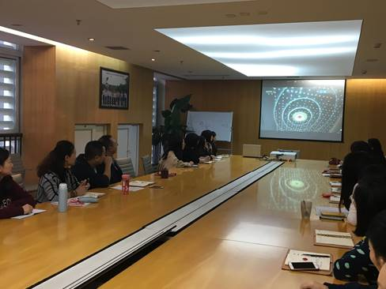

西城新闻




四川省民办高校党建工作情况调研组来我院调研
为积极响应上级党组织关于加强民办高校基层党组织建设，促进民办高校党组织切实发挥政治核心作用的号召，认真贯彻落实《中共四川省委教育工作委员会关于开展民办高等学校党建工作...
2016-10-25

我院第十八期业余党校开班典礼顺利举行
我院业余党校第十八期入党积极分子培训班开班典礼在博识楼B-115举行。党校校长、党委副书记杨晓蓉，党委委员、院长助理詹廷君，党委委员、学生处副处长何仕元...
2016-10-21

四川电子机械职业技术学院到访学院
来自四川电子机械职业技术学院建筑工程系的团学代表与学院土木工程系团学代表举行了校际交流活动。该系副主任赵梦磬、综合办公室主任程玉林出席了会议，会议由该系辅导员张丽萍...
2016-10-20

版权所有 © 2012-2015 西南科技大学城市学院安县校区
学院地址：四川省绵阳市安县花垓镇滨河路 邮编：621000
蜀ICP备10208837
电话：0816-6285123
技术支持：西南科技大学城市学院网络中心
管理信箱：webmaster@ccswust.com.cn